View Based テーブルビュー・データを表示する
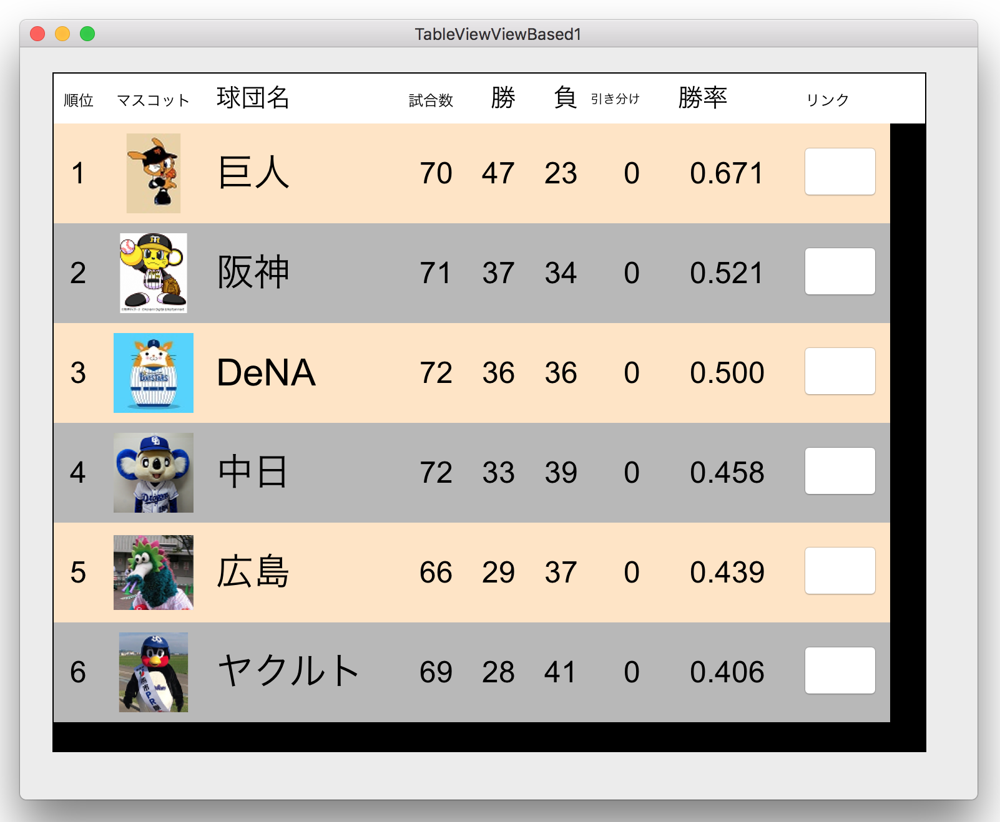
この章で作成するテーブルビューの仕様
表示するオブジェクトは属性付き文字列、イメージ、ボタンとする。文字列の表示位置は縦/横方向で調整する。行の背景色を偶数行/奇数行で変える。列見出しはフォントサイズを変える。
データはプロ野球セリーグの勝敗表である。ボタンをクリックすると球団の公式ホームページをブラウザに表示する。
本章ではViewBasedのテーブルビューを採用する。CellBasedテーブルビューとの違いは、テーブル上の各要素（セル）に表示するオブジェクト種類、およびセット方法の違いである。ViewBasedは表示オブジェクトとしてNSViewクラスから派生したオブジェクトを使用するもので、文字列、コントロール、イメージなどが表示可能である。
CellBasedは表示に NSCellクラスから派生したオブジェクトを使用する。なお確認した限りでは、データソース・プロトコルの仕様により表示できるのは文字列のみのようである。
なお以後の説明では、セルという用語はテーブル（表）の要素という意味で使用する。CellBasedの「Cell」とは意味が違うので混同しないように。
ViewBased テーブルビューのクラス構造
UATabakeView : NSTableView テーブルビュー本体
NSTableColumn 列オブジェクト
NSTableCellView 列ごとのセルに対応したビュー
UATextField : NSTextField セルの中に文字列を表示する
IconView : NSTextField セルの中にイメージを表示する
（赤字はカスタムクラス）
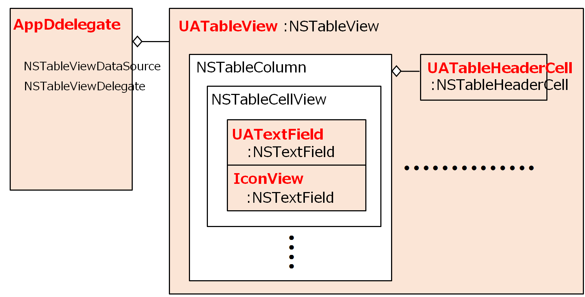
実装方法
テーブルビューのレイアウトを定義する
ここではインタフェースビルダーにより行う。
列の識別名を入力する （TableColumn の Identifier）
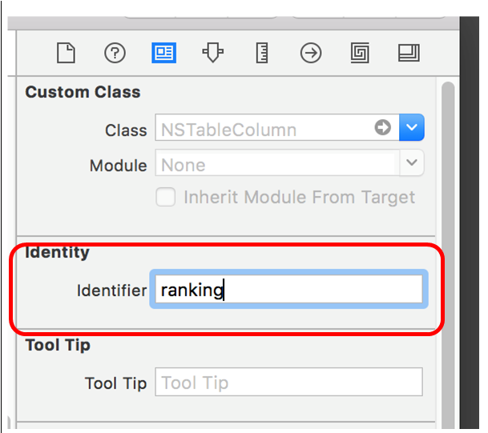
列の幅 （TableColumn の Width）
ユーザに幅の変更を許さないときは、最大幅/最小幅を同じにしておく。
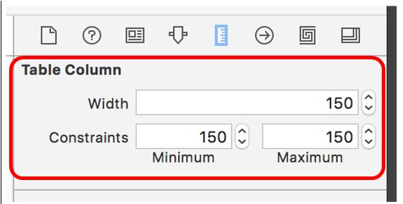
セルの大きさ （TableCellView の size）
原点は列の並びにより自動的に決まる
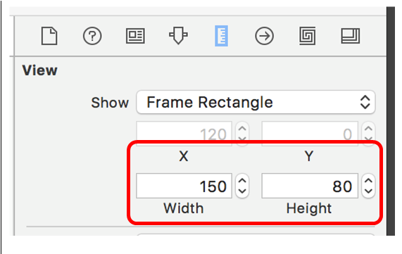
テキストフィールドの原点と大きさ（TextField の origin と size）
文字列またはイメージを表示するNSTextFieldのサブクラス
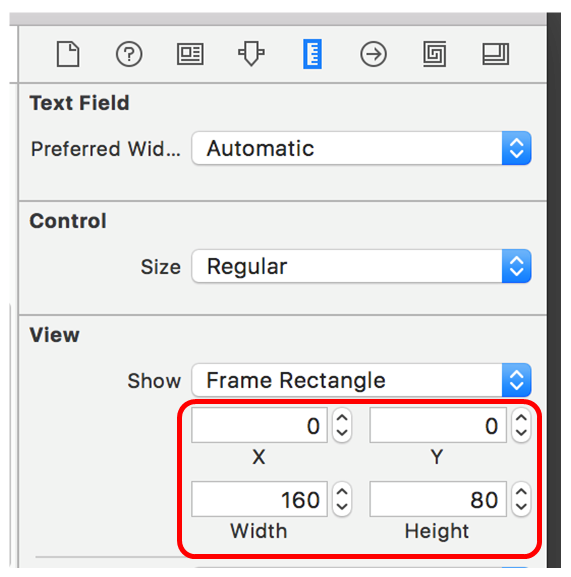
行の高さ (TableViewのRow Height）
指定しなければ上で定義したセルの高さと等しくなる。
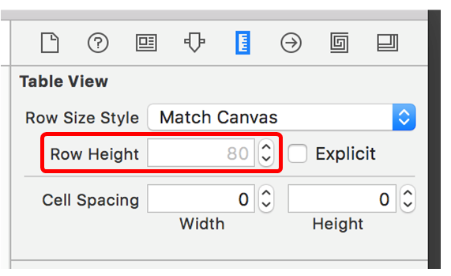
選択行のハイライトをしない (TableViewのRow Highlight）
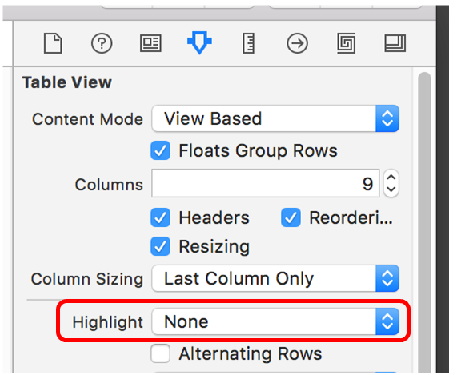
プロトコルに準じたメソッドを実装する
NSTableViewDataSource、NSTableViewDelegateプロトコルを実装することにより、テーブルビューの特定のセルに表示したいオブジェクトを描き出す。プロトコルを採用した AppDelegateクラスに次の2つのメソッドを実装する。
テーブルの件数（行数）を返す。
引数columnとrow により特定されるセルに表示するオブジェクト（NSViewのサブクラス）を返す。
makeViewWithIdentifier:owner:メソッドにより、当該セルのTableCellViewオブジェクトが得られる。このオブジェクトのプロパティに表示するオブジェクトを設定して戻り値として返す。内部処理ではオブジェクトがなければ作成し、あればそればそれが使い回されるようだ。
セルに文字列を表示する
TableCellViewオブジェクトは、TextFieldオブジェクトをプロパティとして保持しているので、これの stringValue または attributedStringValue に文字列または属性付き文字列を代入すればテーブルビューに表示される。
セルにイメージを表示する
イメージを表示するセルは、NSTextFieldのサブクラスである IconViewクラスとして定義する。このクラスはプロパティにNSImageオブジェクトを保持し、ビューの再描画メソッド（drawRect）により指定した範囲に出力するようにしている。
インタフェースビルダで「Table View Cell」オブジェクトのクラスをIconViewにしておく。
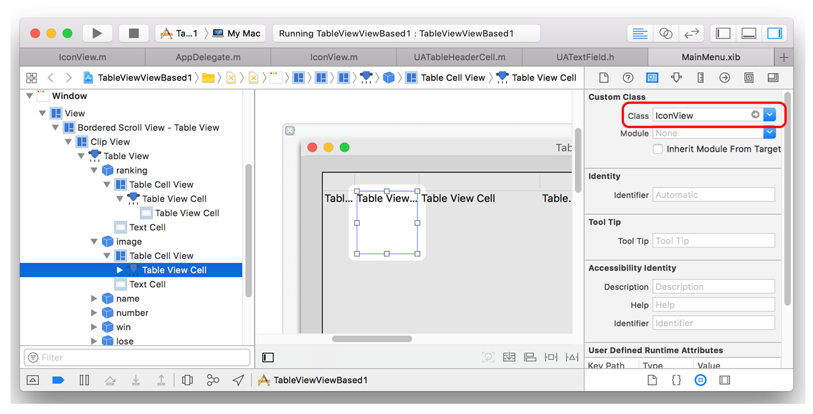
デリゲートで取得するTableCellViewオブジェクトにはIconViewオブジェクトが格納さるので、teamIconプロパティに表示イメージを設定すればよい。
（注１）cellViewオブジェクトのstringプロパティに文字列を代入している。
tableView の reloadDataメソッドは、テーブルの全セルを再表示するもので、データソースが変更されたとき、変更内容を反映させるために呼び出す。このメソッドは TableCellViewが保持する NSTexFieldの「本来の」プロパティに値が設定されている場合だけ、そのセルの再表示を行う仕様になているらしい。
IconViewクラスのイメージを保持するプロパティは、サブクラスに追加したものなので、これだけでは再表示の対象とならない。このプログラムでは特に問題ないが、仮にイメージをプログラム内で動的に変え、テーブルビューに反映させたい場合はうまくいかない。それを回避するためには、ダミーの文字列をstringプロパティに代入しておく必要がある。
（NSTextFieldクラスには本来imageプロパティがあるが、そこにイメージを代入してもnilになってしまい表示されない。なぜだろう？）
セルにボタンを表示する
ここではNSButonオブジェクトを作成し取得したNSTableCellViewオブジェクトに貼り付け返している。NSButonオブジェクトを直接返してもいいが、ベースとなるセルのビューは表示されない。
文字列の表示を上下で中央揃えにする方法
TableCellViewオブジェクトが保持するTextFieldオブジェクトに文字列を書き込んだとき、デフォルトでは文字列は上揃えの表示になる。これを変えるにはいくつか方法がある。
第一に、TextFieldオブジェクトの表示領域（frameプロパティ）の値を変えることによって、表示文字列の位置を変えることができる。下図はインタフェースビルダーによって表示領域を縦方向に20ピクセル下げた例である。
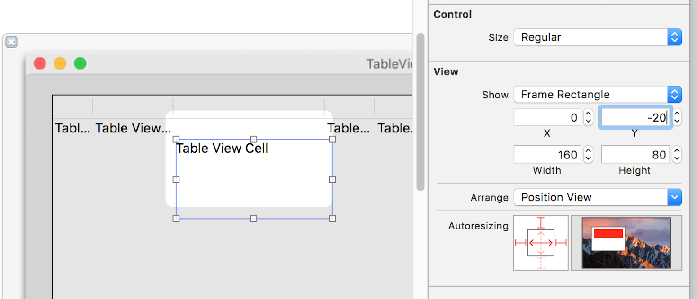
ただし、この方法では文字列の上方の高さを固定的に変えるだけである。表示する文字列の大きさが変わっても常に行の中央に揃えるための方法は次の通り。
NSTextFieldのサブクラスのUATextFieldを作成し、文字列を表示するセルのクラスとする。
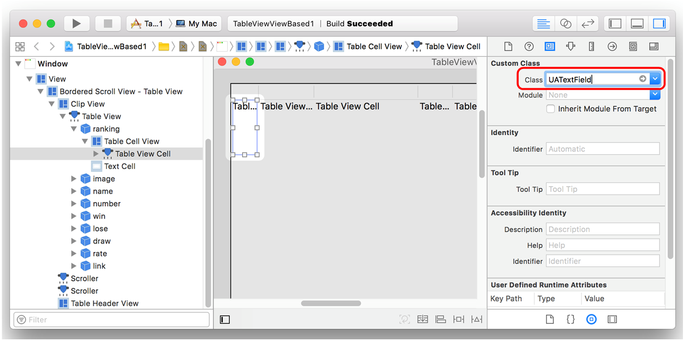
ビューを再表示するメソッド（drawRect）をオーバーライドする。この中で自身のフレームサイズとプロパティに保持する表示文字列のサイズから表示すべき位置を割り出しそこに文字列を描画する。なおsuperクラスのdrawRectは文字列の二重表示になってしまうので実行しない。
この例では、水平方向の位置もプロパティの指定に従って、右/中央/左揃えをしている。（水平方向は、属性付き文字列であればパラグラフ属性の指定で変えることもできる。）
インタフェースビルダで「Table View Cell」オブジェクトのクラスを UATextField にしておく。これによりTableCellViewオブジェクトの実体は UATextFieldオブジェクトとなる。UATextFieldクラスとして操作するには次のようにキャストする。
行ごとに背景色を変える
取得したTableCellViewオブジェクトのレイヤーの背景色を変えることで、セルごとに背景色を設定することができる。row（行）の値で偶数行/奇数行を判定できる。
TableCellViewオブジェクトのbackgroundColorプロパティで変更することもできる。だだし本アプリでは、drawRecをオーバーライドして super の drawRect を呼ばないようにしているので動作しない。
列見出しを編集する
列の見出しはNSCellクラスから派生するNSTableHeaderCellクラスのオブジェクトとして実装されている。
Cellオブジェクトは、自身と一対になるViewオブジェクトに含まれ、共同してビューへの描画を行う。内部的にはViewオブジェクトの描画メソッドの後に、Cellオブジェクトの描画メソッドが実行されるようだ。このような仕組みになったのは歴史的な経緯によるもよう。通常、描画を行うにはViewオブジェクトの操作だけだで済み、Cellオブジェクトを操作することはほとんどない。しかし列の見出しはCellオブジェクトとして実装されているので見出しの編集にはこのクラスを直接扱う必要がある。
列見出しのNSTableHeaderCellオブジェクトは、列を構成するTableColumnオブジェクトに直接組み込まれている。見出しの文字列を設定するには、このオブジェクトを取得し、stringプロパティまたは attributedStringプロパティに文字列または属性付き文字列を代入すればよい。
ただし縦方向の表示位置は上揃えになるので、そこをを変えたいときはNSTableHeaderCellクラスのサブクラスを作成して、その中で表示位置を指定して文字列を描画する必要がある。
NSTableHeaderCellクラスのサブクラス
描画メソッド drawWithFrame:inView:をオーバーライドする。NSCellクラス自身は表示領域の情報を持たず、対応するNSViewクラスの領域を共有する。引数cellFrameにより得られるビューの描画領域(NSRect構造体）を元に文字列の表示位置を調整することができる。また、横方向の文字揃えも追加したプロパティの指定により調整している。
背景色の変更
cellの背景色は、backgroundColorプロパティを指定しても、行の高さをデフォルトより高くした場合なぜかその分だけ色が反映しない。
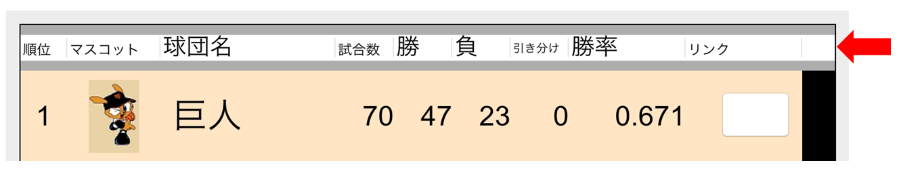
背景色を変えるために新規のcellオブジェクトを作成して、backgroundColorプロパティに背景色を設定し、drawWithFrameメソッドで描画している。（やや苦し紛れの方法か）
クラス一覧
パフォーマンスに関する考察
データソースおよびデリゲートメソッドはフレームワークが自動的に起動するもので、アプリケーションがそれを制御することはできない。
例えば、tableView:viewForTableColumn:rowメソッドは、表の要素数分だけ毎回起動するので相当の回数となるはずである。この点についてどこまでパフォーマンスを考慮した実装にすべきか？
一般的には、コンパイラなどによる最適化の効果により繰り返し処理に対する効率化はかなりのレベルにある。メモリの中で完結する処理であれば、ほとんど気にする必要はないかもしれない。
ただし、データソースとなるデータの取得のために、ファイルのIO、データベースに対する読み書き、ネットワークへの送受信といった外部ノードとのやり取りが必要になるとしたら、これらの対しては最適化の応用に限界もあるので、パフォーマンスを考慮した実装が必要であろう。
メソッドが１回起動するたびに、外部ノードとのやり取りが発生するのでは、非常に効率が悪い。極力外部ノードとのやり取りを減らすことが肝要である。
一般的な方法は、データソースの取得は初期処理で一度のみ行い、メモリ上にオブジェクトとして保持しておき、必要にたびにこのオブジェクトを読み込むことにする。これで外部ノードとのやり取りは一回で済む。
ただし、元データが変更されたとき、その変更をオブジェクトに反映する必要が生じた場合、対応はやや複雑になるだろう。
※いずれにしろ設計の妥当性については、定量的な検証が前提となる。